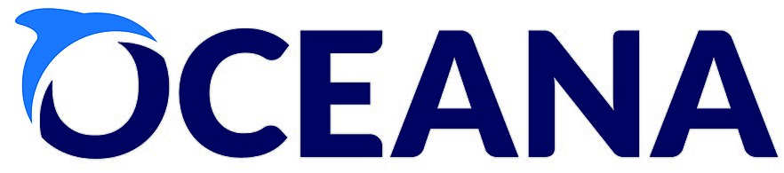
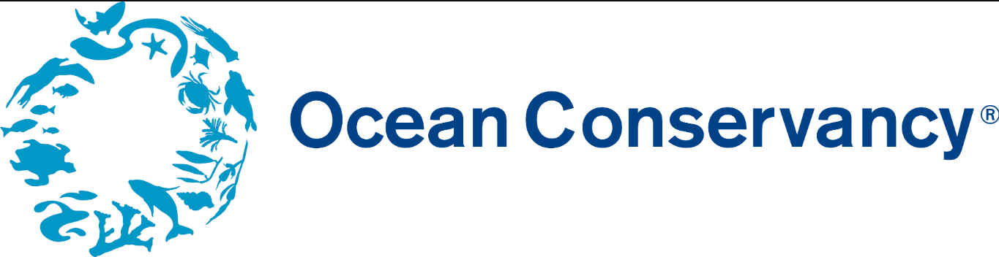
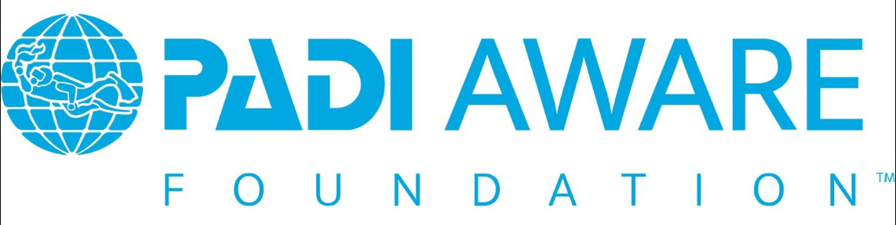

Before you explore this page, I encourage you to watch the video first! ˙ᵕ˙
Video: Oceana. (2019, October 9). POWERFUL VIDEO: Why we need to stop plastic pollution in our oceans FOR GOOD | OceanA [Video]. YouTube. https://youtu.be/Yomf5pBN8dY? si=as9I9u9M1DYAOzyc
Based from the video, the ocean is an important habitat for our planet Earth. Helping the species to survive while providing them a home, and also helping to provide life in our planet.
It is an upseting fact that the oceans are constanly faced with challenges and situations by the human race. Luckily, there are ways, programs and missions that has the passion to help the aquatic community, and protecting the ecosystems from any more harm or damage. Using simple steps such as a decline of plastic usage and beach cleanups.
The following are examples of these kinds organizations:
-

- An organization that is the world's largest international organizations that has the passion and desire to help to conserve, protect, and restore the resources in oceans.
- Creates campaigns that focuses on a particular issues in the ocean, such as overfishing, to address this situation while creating solutions on how to reduce this problem.
- While creating research and collecting data on finding solutions.
-

- An organization that promotes healthy ocean ecosystems, prevent marine pollution, and address climate change.
- Created an event where people volunteer picking up gabage in rivers, lakes, and beaches. It is called the "International Coastal Cleanup."
- The organization focuses more on reducing the plastic pollution in aquatic ecosystems.
- Protecting and conserving the habitat along the way.
-

- An organization that has the passion to global ocean conservation by doing local action.
- The organization addresses key issues in the marine enviroment.
- Providing education and awareness towards these aquatic areas towards the community.